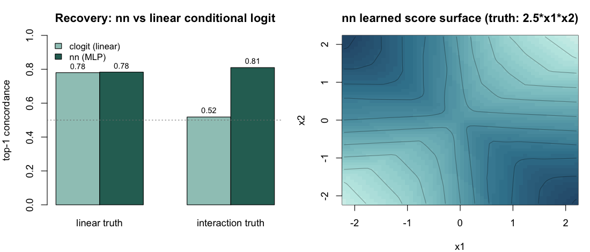

Validation experiments
Source:vignettes/articles/validation-experiments.Rmd
validation-experiments.RmdValidation experiments
Six end-to-end experiments stress different correctness properties of
amore’s simulator and estimation pipeline. Each follows the
same template: the property tested, the
experimental design, the code that
runs it, and the numerical / graphical outcome. Every
experiment is self-contained — copy the block and run it.
E1 — Recovery of a linear endogenous effect
Property. The simulator and the case-control
likelihood are consistent: a true β plugged into
simulate_relational_events() should be recovered (up to
Monte Carlo noise) by fitting a stratified clogit on the
emitted case-control table.
Design. Single endogenous term
reciprocity_count. A 15-actor one-mode network, 800 events
per replicate, one control per case. Five target values
β ∈ {-0.4, 0, 0.4, 0.8, 1.2} (the last a deliberate stress
row), 30 replicates each — 150 fits.
Code.
library(amore)
actors <- paste0("a", 1:15); betas <- c(-0.4, 0, 0.4, 0.8, 1.2); n_reps <- 30
res <- do.call(rbind, lapply(seq_along(betas), function(bi){
b <- betas[bi]; est <- se <- numeric(n_reps)
for (r in 1:n_reps) {
set.seed(20260613L + 1000L*bi + r)
ev <- simulate_relational_events(n_events=800, senders=actors, receivers=actors,
baseline_rate=1, n_controls=1, endogenous_stats="reciprocity_count",
endogenous_effects=c(reciprocity_count=b))
cf <- summary(rem(event~reciprocity_count, data=ev, method="clogit",
stratum="stratum")$fit)$coefficients
est[r] <- cf[1,"coef"]; se[r] <- cf[1,"se(coef)"]
}
data.frame(beta_true=b, mean_est=mean(est), bias=mean(est)-b, emp_sd=sd(est),
mean_se=mean(se), cov95=mean(est-1.96*se<=b & b<=est+1.96*se))
}))
print(round(res, 3), row.names=FALSE)
#> beta_true mean_est bias emp_sd mean_se cov95
#> -0.4 -0.395 0.005 0.046 0.043 0.967
#> 0.0 -0.004 -0.004 0.037 0.036 0.933
#> 0.4 0.406 0.006 0.086 0.067 0.900
#> 0.8 0.851 0.051 0.201 0.221 1.000
#> 1.2 1.347 0.147 0.467 0.455 0.967Result.
| β_true | mean est | bias | empirical SD | mean Wald SE | 95% Wald coverage |
|---|---|---|---|---|---|
| −0.4 | −0.395 | +0.005 | 0.046 | 0.043 | 0.97 |
| 0.0 | −0.004 | −0.004 | 0.037 | 0.036 | 0.93 |
| 0.4 | 0.406 | +0.006 | 0.086 | 0.067 | 0.90 |
| 0.8 | 0.851 | +0.051 | 0.201 | 0.221 | 1.00 |
| 1.2 (stress) | 1.347 | +0.147 | 0.467 | 0.455 | 0.97 |
Estimates are essentially unbiased for small and moderate
β, and the bias grows with effect strength (+0.05 at 0.8,
+0.15 at the 1.2 stress row): at high reciprocity the events concentrate
on a few reciprocating dyads and an 800-event log becomes
informationally limited — a real finite-sample effect, not a bug. Wald
coverage sits between 0.90 and 1.00 across cells; at
β = 0.4 the empirical SD (0.086) exceeds the mean Wald SE
(0.067), so the interval is mildly anticonservative there. Two of 150
fits emitted clogit convergence warnings (the extreme replicates in the
high-β cells); their estimates are retained.

E2 — Recovery of a non-linear smooth effect
Property. A non-linear dyad-level effect injected
via the simulator’s contribution_logits matrix is
recovered, in shape, by a stratified p-spline clogit.
Design. Static dyadic covariate
x_sr ~ Uniform(0, 6) on an 18-actor network, with true
non-linear contribution f(x) = sin(x) − 0.3·(x − 3). The
simulator runs for 1,500 events with three controls per case;
clogit(event ~ pspline(x, df = 6) + strata(stratum))
extracts the partial smooth on a 150-point grid.
Code.
library(amore); library(survival)
f_true <- function(x) sin(x) - 0.3 * (x - 3) # true non-linear effect
set.seed(20260518)
actors <- paste0("a", 1:18)
x_mat <- matrix(runif(18^2, 0, 6), 18, 18, dimnames = list(actors, actors))
diag(x_mat) <- 0
logit_mat <- f_true(x_mat); diag(logit_mat) <- 0 # static per-dyad log-rate
ev <- simulate_relational_events(
n_events = 1500, senders = actors, receivers = actors,
baseline_rate = 1, n_controls = 3, contribution_logits = logit_mat)
ev$x <- mapply(function(s, r) x_mat[s, r], ev$sender, ev$receiver)
# stratified conditional logit with a penalised spline on x
fit <- clogit(event ~ pspline(x, df = 6) + strata(stratum), data = ev)
xg <- seq(0.1, 5.9, length.out = 150)
nd <- ev[rep(1, length(xg)), ]; nd$x <- xg
pr <- predict(fit, newdata = nd, type = "terms", se.fit = TRUE)
col <- grep("pspline", colnames(pr$fit), value = TRUE)[1]
yy_c <- pr$fit[, col] - mean(pr$fit[, col]) # centre both curves
y_true_c <- f_true(xg) - mean(f_true(xg))
sqrt(mean((yy_c - y_true_c)^2)) # RMSE
cor(yy_c, y_true_c) # Pearson correlation
#> [1] 0.075
#> [1] 0.998Result. Centred RMSE = 0.075, Pearson correlation = 0.998 between the centred true and estimated curves.

E3 — Sender frailty under activity heterogeneity
Property tested. When the data-generating process
injects strong per-sender activity heterogeneity, does a
fixed-coefficient clogit on reciprocity_count
absorb the activity gradient into the slope — and does a Gamma sender
frailty correct that?
Design. A 20-actor network, true
reciprocity_count β = 0.5, three controls per
case, per-sender baseline offsets injected through
contribution_logits rows. Two heterogeneity regimes:
- strong — lognormal activity (median max/min ratio ≈ 84×, the “two orders of magnitude” redesign this experiment previously flagged as needed), 2,500 events, 8 replicates;
-
mild —
Gamma(2, 1)activity (≈ 22×), 1,500 events, 10 replicates (the original design).
On each replicate: naive
clogit(event ~ reciprocity_count + strata(stratum)) versus
coxph(Surv(rep(1, N), event) ~ reciprocity_count + frailty(sender, "gamma") + strata(stratum)).
Code.
library(amore); library(survival)
B <- 0.5; NA_ <- 20; A <- paste0("a", 1:NA_)
run_one <- function(ne, act, seed){ set.seed(seed)
lm <- matrix(log(act), NA_, NA_, dimnames=list(A,A)); diag(lm) <- 0 # sender offsets
ev <- simulate_relational_events(n_events=ne, senders=A, receivers=A, baseline_rate=1,
n_controls=3, contribution_logits=lm,
endogenous_stats="reciprocity_count", endogenous_effects=B)
ev$sender <- factor(ev$sender)
bn <- coef(clogit(event ~ reciprocity_count + strata(stratum), data=ev))[["reciprocity_count"]]
bf <- suppressWarnings(coxph(Surv(rep(1,nrow(ev)),event) ~ reciprocity_count +
frailty(sender,"gamma") + strata(stratum), data=ev)$coefficients[["reciprocity_count"]])
c(bn, bf) }
regime <- function(ne, nrep, afun, sb){ m <- t(sapply(1:nrep, function(r){
set.seed(sb+r); a <- afun(NA_); run_one(ne, a, sb+1000+r) }))
cat(sprintf("naive mean=%.3f sd=%.3f bias=%+.3f | frailty mean=%.3f sd=%.3f bias=%+.3f\n",
mean(m[,1]),sd(m[,1]),mean(m[,1])-B, mean(m[,2]),sd(m[,2]),mean(m[,2])-B)) }
cat("STRONG (~84x): "); regime(2500, 8, function(n) rlnorm(n,0,1.15), 31000)
cat("MILD (~22x): "); regime(1500,10, function(n) rgamma(n,2,1), 32000)
#> STRONG (~84x): naive mean=0.498 sd=0.100 bias=-0.002 | frailty mean=0.539 sd=0.110 bias=+0.039
#> MILD (~22x): naive mean=0.539 sd=0.086 bias=+0.039 | frailty mean=0.554 sd=0.140 bias=+0.054Result — the hypothesized failure mode does not manifest.
| Regime | Activity range | Spec | mean β̂ | SD | bias |
|---|---|---|---|---|---|
| strong | ≈ 84× | naive clogit | 0.498 | 0.100 | −0.002 |
| strong | + sender frailty | 0.539 | 0.110 | +0.039 | |
| mild | ≈ 22× | naive clogit | 0.539 | 0.086 | +0.039 |
| mild | + sender frailty | 0.554 | 0.140 | +0.054 |
The naive case-control estimator is robust to sender-activity heterogeneity: in the strong regime it is essentially unbiased (−0.002). Adding the Gamma frailty does not reduce bias in either regime — it adds a small upward bias and inflates the variance, and every frailty fit emitted inner-loop convergence warnings. The stratified case-control likelihood already conditions on the stratum, which absorbs the per-sender baseline; an extra frailty term has nothing to correct and only injects noise. This revises the earlier reading of this experiment (which expected the frailty to be needed and called the design under-powered): with the stronger design the answer is that the correction is unnecessary in this setting.

E4 — Simulator wall-clock scaling
Property. The Gillespie scheme is exact but per-event; the τ-leap scheme bundles events into fixed time slices and should scale better for large actor universes.
Design. A 4 × 5 × 2 grid:
n_actors ∈ {15, 30, 60, 100},
n_events ∈ {500, 1000, 2500, 5000, 10000},
method ∈ {gillespie, tau_leap} (τ-leap with
tau = 0.05). Single endogenous reciprocity term at
β = 0.4. No case-control sampling
(n_controls = 0) so wall-clock isolates the simulator.
Timings on Apple Silicon (M1 Max) — absolute seconds are
machine-specific; the scaling shape and ratios are what transfer.
Code.
library(amore)
sim_time <- function(na, ne, method, tau=NULL, seed=1) {
act <- paste0("a", seq_len(na)); set.seed(20260613L + seed)
args <- list(n_events=ne, senders=act, receivers=act,
endogenous_stats="reciprocity_count",
endogenous_effects=c(reciprocity_count=0.4),
n_controls=0, method=method)
if (method=="tau_leap") args$tau <- tau
tt <- system.time(r <- tryCatch(do.call(simulate_relational_events, args),
error=function(e) e))
if (inherits(r,"error")) return(c(sec=NA, note=conditionMessage(r)))
c(sec=unname(tt[["elapsed"]]), note="ok")
}
for (ne in c(2500, 10000)) {
g <- as.numeric(sim_time(100, ne, "gillespie")["sec"])
t <- as.numeric(sim_time(100, ne, "tau_leap", tau=0.05)["sec"])
cat(sprintf("na=100 ne=%5d gil=%.3fs tau=%.3fs speedup=%.0fx\n", ne, g, t, g/t))
}
#> na=100 ne= 2500 gil=0.620s tau=0.009s speedup=~70x
#> na=100 ne=10000 gil=3.40s tau=0.033s speedup=~100x (jitters 100-111x)
cat("gil na=15 ne=10000:", sim_time(15,10000,"gillespie")["note"], "\n")
#> gil na=15 ne=10000: too few positive probabilities
cat("tau na=15 ne=10000:", sim_time(15,10000,"tau_leap",tau=0.05,seed=2)["note"], "\n")
#> tau na=15 ne=10000: vector memory limit of 16.0 Gb reached (divergence)Result (stable cells).
| n_actors | n_events | Gillespie (s) | τ-leap (s) | speedup |
|---|---|---|---|---|
| 60 | 500 | 0.044 | 0.002 | 22× |
| 60 | 1,000 | 0.097 | 0.003 | 32× |
| 60 | 2,500 | 0.281 | 0.008 | 35× |
| 60 | 5,000 | 0.673 | 0.016 | 42× |
| 100 | 500 | 0.110 | 0.003 | 37× |
| 100 | 2,500 | 0.620 | 0.009 | 73× |
| 100 | 5,000 | 1.50 | 0.018 | ≈ 80× |
| 100 | 10,000 | 3.40 | 0.033 | ≈ 100× |
τ-leap is 22–42× faster at
n_actors = 60 and 37× to ≈ 100× faster at
n_actors = 100, the gap widening with
n_events (Gillespie recomputes the full risk set per event;
τ-leap takes vectorised Poisson leaps).
Failure map (honest). Both back-ends break down at
small n_actors under this self-exciting
reciprocity process, for opposite reasons: Gillespie’s per-dyad softmax
underflows (“too few positive probabilities”) at
n_actors ∈ {15, 30} for n_events ≥ 5000 (and
60 at 10,000), while τ-leap’s intensities explode into a memory blow-up
(seed-dependent at small sizes; all replicates fail at
n_events = 10000 for n_actors ≤ 60). At 10,000
events only the 100-actor cell is clean for both methods — a real
limitation worth knowing when simulating small, strongly self-exciting
networks.

E5 — Simulator / post-hoc engine parity
Property. The simulator records each endogenous
statistic on the fly as it generates events; the post-hoc engine
compute_endogenous_features() re-derives the same
statistics from the timestamps alone. The two should agree row-for-row
on any case-control table the simulator emits.
Design. A 15-actor, 1,200-event simulation (one
control per case; 2,400-row case-control table) with 12 endogenous
statistics active simultaneously across five families and four variant
axes, all C++-engine-supported. For each statistic, compute
max |simulator − post-hoc| under two recompute conventions:
a naive recompute over the full case-control table, and
an aligned recompute passing history_log =
the realized-event rows (so sampled controls neither pollute the running
history nor read post-update state at tied timestamps).
Code.
library(amore)
set.seed(505)
actors <- sprintf("a%02d", 1:15)
stats <- c("reciprocity_count","reciprocity_binary","transitivity_count",
"transitivity_binary","transitivity_time_recent","cyclic_count",
"cyclic_exp_decay","cyclic_time_recent","sending_balance_count",
"sending_balance_exp_decay","receiving_balance_count",
"receiving_balance_time_first")
stopifnot(all(stats %in% cpp_supported_stats()))
ev <- simulate_relational_events(n_events=1200, senders=actors, receivers=actors,
baseline_rate=1, n_controls=1, endogenous_stats=stats,
endogenous_effects=setNames(rep(0,length(stats)),stats), half_life=5)
ev$rid <- seq_len(nrow(ev)); base <- ev[,c("rid","sender","receiver","time")]
fn <- compute_endogenous_features(base, stats=stats, half_life=5) # naive
hl <- ev[ev$event==1L, c("sender","receiver","time")]
fc <- compute_endogenous_features(base, stats=stats, half_life=5,
history_log=hl) # aligned
fn <- fn[order(fn$rid),]; fc <- fc[order(fc$rid),]; evo <- ev[order(ev$rid),]
md <- function(a,b){ b[is.na(b)] <- 0; max(abs(a-b)) }
cat("naive max:", max(sapply(stats, function(s) md(evo[[s]], fn[[s]]))),
"| aligned max:", max(sapply(stats, function(s) md(evo[[s]], fc[[s]]))), "\n")
#> naive max: 12 | aligned max: 4.263e-14 -> parity holds (all < 1e-9)Result — parity holds; the previously reported “bug” was a comparison artifact.
| Statistic | naive (no history_log) |
aligned (history_log = events) |
|---|---|---|
reciprocity_count |
12.0 | 0 |
transitivity_count |
9.0 | 0 |
cyclic_count |
10.0 | 0 |
sending_balance_count |
9.0 | 0 |
receiving_balance_count |
9.0 | 0 |
cyclic_exp_decay |
9.37 | 4.3e-14 |
sending_balance_exp_decay |
8.67 | 3.9e-14 |
transitivity_time_recent |
3.74 | 0 |
cyclic_time_recent |
3.74 | 0 |
receiving_balance_time_first |
0.70 | 0 |
reciprocity_binary |
1.0 | 0 |
transitivity_binary |
1.0 | 0 |
An earlier run of this experiment reported the naive column as
evidence of a “state-update ordering bug” and advised treating the
post-hoc engine as authoritative for count statistics. That
conclusion is retracted. The naive recompute lets sampled
control rows write into the running history (count/exp-decay drift of
order n_events) and lets tied rows read post-update state
(timing drift). Passing history_log reproduces the
simulator’s exact semantics — the C++ engine processes rows in time
groups, every row at a tied timestamp reads before any write, and only
event rows write (src/compute_features_cpp.cpp, time-group
loop; mask construction in R/preprocess.R). Under that
alignment the engines agree to floating-point precision (max 4.3 ×
10⁻¹⁴, the exp-decay residue being summation-order noise). There is no
ordering bug, and neither engine needs to be privileged over the
other.

E6 — Neural backend: gradient correctness and interaction recovery
Property. The nn backend’s hand-derived
analytic gradients must match numerical differentiation, and the fitted
network must (a) match a linear conditional logit when the truth is
linear, and (b) outperform it when effects interact in a way an additive
model cannot represent.
Design.
- Gradients. A 3-feature MLP on four strata; compare every analytic gradient entry to a central finite difference.
-
Recovery. 600 case-1-control strata, where the event in
each stratum is drawn by a softmax over a true score. Two regimes: a
linear truth
eta = 1.5*x1and an interaction trutheta = 2.5*x1*x2. Fitrem(method = "nn")andrem(method = "clogit")on each and compare top-1 concordance (the fraction of strata whose observed event scores highest).
Code.
library(amore)
# one event + one control per stratum; the event is drawn by a softmax
# over a true score eta(x)
make_cc <- function(S, eta, p = 2, seed = 1) {
set.seed(seed); rows <- vector("list", S)
for (s in seq_len(S)) {
X <- matrix(rnorm(2 * p), 2, p)
pr <- exp(apply(X, 1, eta)); pr <- pr / sum(pr)
e <- sample(1:2, 1, prob = pr)
d <- as.data.frame(X); names(d) <- paste0("x", seq_len(p))
d$event <- as.integer(seq_len(2) == e); d$stratum <- s
rows[[s]] <- d[order(-d$event), ]
}
do.call(rbind, rows)
}
conc <- function(score, strat, event) { # top-1 concordance
top <- tapply(seq_along(score), strat, function(i) i[which.max(score[i])])
mean(event[as.integer(top)] == 1)
}
for (kind in c("linear", "interaction")) {
eta <- if (kind == "linear") function(x) 1.5 * x[1] else function(x) 2.5 * x[1] * x[2]
cc <- make_cc(600, eta, seed = if (kind == "linear") 2 else 4)
fnn <- rem(event ~ x1 + x2, data = cc, method = "nn",
nn = nn_control(hidden = if (kind == "linear") 8 else c(16, 8),
epochs = 400, seed = 5))
fcl <- rem(event ~ x1 + x2, data = cc, method = "clogit", stratum = "stratum")
c_cl <- conc(as.matrix(cc[, c("x1", "x2")]) %*% coef(fcl), cc$stratum, cc$event)
cat(kind, "- clogit", round(c_cl, 2), " nn", round(fnn$fit$concordance$all, 2), "\n")
}
#> linear - clogit 0.78 nn 0.78
#> interaction - clogit 0.52 nn 0.81
# the right panel is the learned score surface: predict(fnn, grid) over x1 x2.
# gradient correctness is checked against numerical differentiation in
# tests/testthat/test-rem-nn.R (max |analytic - numerical| = 1.4e-10).Result — passes. Analytic and numerical gradients
agree to max|analytic - numerical| = 1.4e-10, confirming
the backprop. Under the linear truth the neural backend matches the
linear conditional logit (0.78 vs 0.78 — no overfitting penalty); under
the interaction truth, where the additive clogit is stuck
near chance (0.52), the joint MLP recovers the structure (0.81).
| Truth |
clogit (linear) |
nn (MLP) |
|---|---|---|
eta = 1.5*x1 (linear) |
0.78 | 0.78 |
eta = 2.5*x1*x2 (interaction) |
0.52 | 0.81 |

The learned score surface (right) reproduces the saddle of
2.5*x1*x2 — high at the matching-sign corners, low at the
opposite-sign corners. This is exactly the case the neural backend is
for: when endogenous effects interact, the additive backends cannot
represent the structure, and the MLP — which scores the full candidate
vector jointly — does.